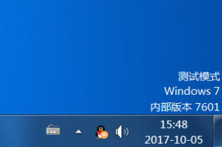

1. 概述
1.1. 前言
适读人群：具备良好的C/C++开发经验，一定的逆向工程基础。
前置阅读：《驱动开发入门 - 之一 ：Win7 SP1 x64 驱动开发环境搭建》
为方便起见，在下文中使用【HostOS】指代【物理机/宿主机/调试机】，用【GuestOS】指代【虚拟机/客户机/被调试机】。
WinDbg是一款双机调试工具，它安装在HostOS上，HostOS与GuestOS通过串口相连接，使用时需要在HostOS用WinDbg调试GuestOS上运行的内核程序。
由于使用两台物理机做双机调试的成本较高、可操作性较低，因此本文双机调试的环境是基于物理机（HostOS）与VMWare虚拟机（GuestOS）搭建的。
之所以使用虚拟机搭建双机调试环境，主要出于以下几个方面考虑：
- ① 驱动程序运行在系统内核，在调测时需要把操作系统设置到测试模式，极大降低安全性。
- ② 经验不足的情况下编写内核程序很容易导致系统蓝屏，在HostOS调试风险过大。
- ③ HostOS无法调试自己。到VS2010为止的IDE均不支持驱动程序的调试功能，只能在操作系统中加载驱动时调试，而加载驱动程序的操作系统是无法调试自身的（遇到INT3中断的时候整个系统会进入假死状态），因此需要借助GuestOS。
1.2. 名词解析
| 名词 | 英文原文 | 解析 |
|---|---|---|
| HostOS | Host Operating System | 物理机/宿主机/调试机 |
| GuestOS | Guest Operating System | 虚拟机/客户机/被调试机 |
| COM | Cluster Communication Port | 串行通讯端口 |
| KD | Kernel Debug | 内核调试 |
1.3 WinDbg简介
——部分内容摘于博文：http://blog.csdn.net/keidoekd2345/article/details/50125747
在安装微软Windows调试工具集后，可以在安装目录下发现四个调试器程序，分别是：cdb、ntsd、kd和WinDbg。
其中cdb和ntsd只能调试用户程序，kd主要用于内核调试（有时候也用于用户态调试）。这三者的一个共同特点是都只有控制台界面，以命令行形式工作。
而WinDbg在用户态、内核态下都能够发挥调试功能，特别地，它采用了可视化的用户界面。所以绝大部分情况下，我们在谈及Windows调试工具时都直接指向WinDbg，而不谈及其他三者。
WinDbg支持源码级的调试（类似于VC自带的调试器），而且在用户态和内核态下，都支持两种调试模式，即“实时调试模式（Living）”和“事后调试模式（Postmortem）”。
实时调试模式（Living）：是被调试的目标对象（Target）当前正在运行当中，调试器可以实时分析、修改被调试目标的状态，如寄存器、内存、变量，调试exe可执行程序或双机实时调试都属于这种模式。
事后调试模式（Postmortem）：是被调试的目标对象（Target）已经结束了，现在只是事后对它保留的快照进行分析，这个快照称为转储文件（Dump文件）。
2. 操作系统与预装组件
- ① HostOS系统版本： Win7 SP1 x64 （必须升级到SP1版本）
- ② GuestOS系统版本： Win7 SP1 x64 （必须升级到SP1版本）
- ③ 在HostOS安装VS2010驱动开发环境的相关组件（详见《驱动开发入门 - 之一》，此处不再复述），之所以选择VS2010环境，是因为VS2008在x64环境下的混合汇编能力较弱，不便于后续的开发调试工作。
3. 相关工具安装
| 目标机器 | 工具 | 版本 | 用途 | 备注 | 下载 |
|---|---|---|---|---|---|
| HostOS | VS2010驱动开发 环境的相关组件 |
||||
| HostOS | VMWare | 11.1.2 | 安装GuestOS 的虚拟机 |
用于搭建隔离环境 调试驱动程序 |
|
| HostOS | WinDbg | 6.11 | Windows平台下的 驱动程序调试工具 |
用于配合GuestOS 双机调试驱动程序 |
官方地址 CSDN |
| HostOS | windbg-双机调试.bat | 6.11 | 使得windbg连接到 GuestOS的启动脚本 |
配合WinDbg使用， 已固化启动参数 |
CSDN |
| HostOS | Win7符号文件 | Win7 SP1x64 |
WinDbg调试代码用 | 相当于Win系统内核 程序的源码文件 |
官方地址 |
| GuestOS | 开启win测试环境.bat 关闭win测试环境.bat |
调测环境变更脚本 | 把操作系统永久切换到测试 模式并关闭驱动签名校验 |
CSDN | |
| GuestOS | DriverMonitor | 3.2.0 | 驱动程序装载器 | XP x86用于安装、启动内核 程序的调试工具， Win7 x64可能不兼容 |
CSDN |
| GuestOS | InstDrv | 1.3.0 | 驱动程序装载器 | Win7用于安装、启动 内核程序的调试工具 |
CSDN |
| GuestOS | DebugView | 4.81 | 内核驱动消息捕获器 | 配合DriverMonitor或InstDrv 使用，用于捕获内核程序的 DbgPrint / KdPrint语句 所打印消息 |
CSDN |
| HostOS GuestOS |
VirtualKD | 3.0 | 内核调试加速器 | 配合WinDbg使用，提高 HostOS与GuestOS传输速率 |
官方地址 |
4. 安装VMware虚拟机及GuestOS
由于VMWare11之后的虚拟机和系统安装都比较简单，此处就不详述了，仅说明一下步骤：
- ① 在HostOS安装VMWare虚拟机
- ② 在虚拟机安装Win7 x64 SP1操作系统（GuestOS）
- ③ 为了便于HostOS与GuestOS的文件交互，安装VMWare Tools（VMWare 已自带：【菜单】 –> 【虚拟机】 –> 【安装VMWare Tools】）
- ④ 在GuestOS中执行【开启Windows测试环境.bat】脚本使GuestOS关闭驱动签名校验，并进入测试模式
- ⑤ 在GuestOS中安装 DriverMonitor / InstDrv 和 DebugView
【注意】
若第 ④ 步的脚本下载地址已失效，可手动在GuestOS的DOS控制台输入以下命令：
【开启Windows测试环境.bat】脚本主要是两个指令：
bcdedit -set loadoptions DDISABLE_INTEGRITY_CHECKS // 关闭驱动数字签名校验
bcdedit /set testsigning on // 开启系统测试模式
【关闭Windows测试环境.bat】脚本是配套的两个还原指令：
bcdedit -set loadoptions DENABLE_INTEGRITY_CHECKS // 启动驱动数字签名校验
bcdedit /set testsigning off // 关闭系统测试模式
5. 配置VMWare的虚拟管道串口
当双机都是物理机时，HostOS与GuestOS是用物理串口连接的。
但是在GuestOS是虚拟机的情况下，就不可能使用物理串口了，此时需要在GuestOS上设置一个用虚拟的管道串口，步骤如下：
① 在虚拟机关机状态下，选择【编辑虚拟机设置】：

② 在【硬件】选项卡【移除打印机】：
这是因为打印机默认占用了串口COM_1，为了使得下文的配置无需修改，这里建议删除打印机（不删除打印机也可以，但后面的配置请自行修改为COM_2作为管道串口命名）
③ 添加一个串行端口：【添加】 –> 【串行端口】 –> 【下一步】 –> 【输出到命名管道】 –> 【下一步】：


④ 设置如下值，点击【完成】按钮。
命名管道：\.\pipe\com_1 （会自动填上编号最小的可用串口）
- 【该端是服务器。】
- 【另一端是应用程序。】
- 【勾上】启动时连接。
⑤ 最后回到如下所示的界面，选中刚才新建的【串行端口】，在I/O模式【勾选】轮询时主动放弃 CPU(Y)，点击【确定】即可。
6. 在GuestOS增设调试模式的操作系统
首先区分GuestOS中操作系统的几种模式：
- 正常模式：初装操作系统时的默认状态
- 测试模式：利用bcdedit命令打开系统的TestSigning开关，使系统处于可以装载未认证驱动程序的状态（若已按上文所述操作，当前的GuestOS已处于此状态）
- 调试模式：利用bcdedit命令打开系统的debug和bootdebug 开关，使系统上运行的程序处于可以被另一个系统调试的状态
本节的最终目标就是在 [测试模式] 的基础上再增加 [调试模式]，更具体地描述，就是在开机的操作系统列表中新增一个被标识为【启用调试程序】的操作系统（其中“Win-7双击调试模式”是自定义的系统名称，“启用调试程序”表示该系统处于调试模式）
在XP时代，通过修改C:\boot.ini配置文件可以实现此目的。但Win7系统已经没有这个文件了，需要通过bcdedit命令进行配置。
详细的配置方式如下：
① 虚拟机开机后，正常登陆到Win7系统桌面（若已按照上文配置，当前所登陆到的Win7系统正处于【测试模式】，可以通过桌面右下角的水印验证。某些系统会屏蔽这个水印，此时可以通过命令【bcdedit /enum】确认testsigning的值是否为Yes以判断系统当前是否处于测试模式）。

② 以管理员身份运行DOS控制台在控制台中依次输入以下命令：
bcdedit /copy {current} /d "Win7-双机调试模式" // 这是系统副本的名字，任意即可
bcdedit /timeout 10这两条命令的作用是把当前所登陆的操作系统，复制一份副本，命名为【Win7-双机调试模式】。新的系统会出现在开机时的操作系统列表中，该列表的呈现时间为10秒。

③ 重启GuestOS，此时可以看到在操作系统列表中多出第一项【Win7-双机调试模式】，这就是刚才复制的系统副本。选择这个系统登陆到桌面。
④ 以管理员身份运行DOS控制台，在控制台中依次输入以下命令使得系统进入调试模式：
bcdedit /debug ON
bcdedit /bootdebug ON再输入以下命令可查看操作系统在调试模式下使用的串口配置：
bcdedit /dbgsettings如下图所示为调试模式的配置参数，其中【debugtype=Serial】表示使用串口做调试，【debugport=1】表示串口端口为COM_1，【baudrate=115200】为波特率，表示HostOS与GuestOS通过此虚拟串口交换数据的传输速率（约等效于10KB/s，暂时保持默认值即可）。

这里需要注意的是，若上文小节【5 配置VMWare的虚拟的管道串口】中所配置的串口不是COM_1，这里可以使用以下命令 修改串口号等 调试模式的参数：
bcdedit /dbgsettings serial debugport:1 baudrate:115200
⑤ 到此就已经成功添加了一个调试模式的操作系统了，重启后可在系列列表中看见【Win-7双击调试模式 [启用调试程序]】，这个就是之后要用来调试驱动用的系统。

⑥ 为了便于之后开机后都处于调试模式，可以通过右键【计算机】 –> 【属性】 –> 【高级系统设置】 –> 【高级】 –> 【启动和故障恢复】 –> 【设置】 修改默认的操作系统、以及操作系统列表的显示时间：
7. WinDbg的安装与配置
只有HostOS需要安装WinDbg，步骤如下：
- ① 安装dbg_x86_6.11.1.404.msi到HostOS任意位置
- ② 复制windbg_cn.exe到安装目录（此为汉化界面入口）
- ③ 复制 [windbg_cn-双机调试.bat] 和 [windbg-双机调试.bat] 脚本到安装目录（这两个脚本功能相同，区别只是一个汉化版、一个英文版）
- ④ 根据上文设置的虚拟管道串口，右键编辑bat脚本的启动参数（若使用COM_1串口则无需修改）：
start “” windbg_cn.exe -b -k com:pipe,port=\.\pipe\com_1,baud=115200,reconnect -y // 中文脚本
start “” windbg.exe -b -k com:pipe,port=\.\pipe\com_1,baud=115200,reconnect -y // 英文脚本
8. 验证WinDbg配置（连接GuestOS）
- ① 启动虚拟机，进入【win7-双机调试模式 [启动调试程序]】系统（注：调试模式的系统在启动过程有两个系统断点，若不通过WinDbg跳过断点，系统会陷入中断状态无法进入桌面）。
- ② 运行 [windbg_cn-双机调试.bat] 脚本，若脚本配置的启动参数与GuestOS设置的虚拟管道串口参数一致，则可以明显看到宿主系统和虚拟系统连接成功的提示。
- ③ 在系统启动过程中，会出现多次【int 3】系统中断，需要在WinDbg的【kd>】中输入命令【g】以跳过中断，直到登陆到桌面。
- ④ 成功进入桌面后，就可以开始使用WinDbg做双机调试。

9. 双机调试
9.1. 什么是符号文件
类似于在C/Java的IDE中调试源码，WinDbg在调试驱动程序时也需要用到源码，在Windows中把这种源码称之为符号文件（Symbol Files）。
符号文件是一个数据信息文件，以*.pdb扩展名标识。它包含了应用程序二进制文件（如*.sys、*.dll、*.exe）的调试信息（如程序中所有变量信息），专用于调试。符号文件与二进制文件的编译版本密切，当二进制文件被重新编译时，上次编译所产生的pdb文件就过时了，不能再用于调试工作。
用 Visual C++ 和 WinDbg 调试程序时都要用到符号文件，但最终生成的可执行文件在运行时并不需要符号文件。
例如每个 Windows 操作系统下有一个 GDI32.dll 文件，编译器在编译该 DLL 的时候会产生一个 GDI32.pdb 文件。一旦我们拥有了这个GDI32.pdb文件，那么便可以用它来调试并跟踪到 GDI32.dll 内部。
9.2. 符号文件路径设置
WinDbg是支持在调试时自动在线下载对应符号文件的。但是符号文件内容也不少（某些符号文件在线下载需要几分钟，不便于调试），建议把离线安装包下载到本地先预安装。
这个是微软提供的各个Windows版本的符号路径下载的站点：
https://developer.microsoft.com/en-us/windows/hardware/download-symbols
以本文所采用的操作系统版本为例，选择【Windows 7 Service Pack 1 x64 retail symbols, all languages】下载：
下载成功后，将其安装到HostOS的任意位置即可。
本文所选择的符号文件安装目录为：E:\04_work\re\Symbol
安装成功后，配置环境变量：
- ① 右击【计算机】–>【属性】–>【高级系统设置】–>【高级选项卡】–>【环境变量】
- ② 在【系统变量】中新建四个变量：
| 变量名 | 变量值 | 备注 |
|---|---|---|
| _NT_SYMBOL_DIR | E:\04_work\re\Symbol | 符号文件安装目录 |
| _NT_SYMBOL_PATH | %_NT_SYMBOL_DIR%;symsrv*symsrv.dll* %_NT_SYMBOL_DIR%*http://msdl.microsoft.com/download/symbols |
符号文件检索位置 |
| _NT_SOURCE_PATH | 根据实际情况按需配置（可不配） | 编译驱动生成的符号文件目录 |
| _NT_ALT_SYMBOL_PATH | 根据实际情况按需配置（可不配） | 其他符号文件目录 |
注：
在环境变量 _NT_SYMBOL_PATH 指定了两个路径:第一个是本地符号文件安装目录，第二个是在线符号文件站点。 它表示如果在本地安装目录%_NT_SYMBOL_DIR%下找不到所需的Symbol File，就从微软的Symbol Server上下载并保存到%_NT_SYMBOL_DIR%目录。
重新运行WinDbg连接到GuestOS，从控制台的连接信息可以看到WinDbg已成功找到符号文件路径位置。点击【文件】 –> 【符号文件路径】 可以发现系统变量 _NT_SYMBOL_PATH 所指定的符号文件路径已被加载到WinDbg：
9.3. 调试一个驱动程序
以之前的VS2010_WDK_Demo驱动项目为例（该项目通过EasySYSchs生成，已生成模板代码，编译后可直接被系统加载运行，详见《驱动开发入门 - 之一》，此处不再复述）。
在VS2010_WDK_Demo.cpp中找到入口函数DriverEntry，使用DbgPrint函数打印一句内核调试消息：
重新编译并签名VS2010_WDK_Demo驱动项目，拷贝VS2010_WDK_Demo.sys到GuestOS中，并使用DriverMonitor / InstDrv装载并启动该驱动，则可以在WinDbg中捕获到刚才添加的内核消息“Hello, Driver By VS2010”：
9.4. 加入断点调试
由于驱动程序中没有断点，驱动程序被装载后转瞬就运行完了。
为了便于调试，这次在驱动程序的入口函数DriverEntry中加入INT 3系统中断的汇编代码（此处只演示效果，暂不说明如何在x64系统中嵌入汇编代码，若有需要了解可见附录）：
重新编译并签名VS2010_WDK_Demo驱动项目。
把HostOS编译目录中生成的符号文件VS2010_WDK_Demo.pdb设置到WinDbg中（【文件】 –> 【源文件路径】），使得WinDbg可以在调试过程中查看驱动程序的源码。
然后拷贝驱动程序VS2010_WDK_Demo.sys到GuestOS中，签名后使用DriverMonitor / InstDrv装载并启动该驱动，此时GuestOS因为系统中断会陷入假死状态，按【Ctrl+Alt】释放鼠标到HostOS，发现WinDbg已运行到断点位置并暂停。
在WinDbg上方的工具栏提供了对驱动程序做调试的按钮，左侧为源码区，右侧则是控制台，如下所示为单步调试的过程。
熟悉WinDbg的使用后，其他驱动程序的调试方式也是大同小异，此处就不再一一叙述了。
10. 附录1：利用VirtualKD提高调试的传输速率
在调试的过程中可能会发现WinDbg经常会不断打印一堆意义不明XML stream消息刷屏，在打印期间WinDbg与GuestOS均处于无法操作的假死状态。
SXS.DLL: Read 0 bytes from XML stream; HRESULT returned = 0x00000001
SXS.DLL: Creating 8828 byte file mapping
C:\Users\Administrator\Desktop\DriverGenius\security\kxescan\kfc_dps.datSXS.DLL: Read 756 bytes from XML stream; HRESULT returned = 0x00000000
00000000: 3c-3f-78-6d-6c-20-76-65-72-73-69-6f-6e-3d-22-31 (<?xml version="1)
00000010: 2e-30-22-20-65-6e-63-6f-64-69-6e-67-3d-22-55-54 (.0" encoding="UT)
00000020: 46-2d-38-22-20-73-74-61-6e-64-61-6c-6f-6e-65-3d (F-8" standalone=)
00000030: 22-79-65-73-22-3f-3e-0d-0a-3c-21-2d-2d-20-43-6f ("yes"?>..<!-- Co)
00000040: 70-79-72-69-67-68-74-20-28-63-29-20-4d-69-63-72 (pyright (c) Micr)
00000050: 6f-73-6f-66-74-20-43-6f-72-70-6f-72-61-74-69-6f (osoft Corporatio)
00000060: 6e-20-2d-2d-3e-0d-0a-3c-61-73-73-65-6d-62-6c-79 (n -->..<!assembly)
这种消息实际上是HostOS与GuestOS在交互数据，当在GuestOS打开某些进程时就可能会触发。当需要交互的数据量很大的时候，就会造成WinDbg与GuestOS双双陷入假死状态，直到数据交互完成。那么要解决假死状态的方法自然就是想办法使得HostOS与GuestOS尽快完成数据交互。
在前面配置虚拟管道串口的时候，有一个波特率参数，默认值就是【baudrate=115200】，该值直接制约了HostOS与GuestOS交互数据的传输速率（115200 baudrate等效于115200 bit per secon，约为10KB/s）。但是串口波特率的取值范围为300、600、1200、2400、4800、9600、19200、38400、43000、56000、57600、115200，可以发现默认值已经是最大值了，无法再上调波特率。
为此需要借助MS提供的另一个工具VirtualKD：其原理是先在HostOS与GuestOS预装后门进程，然后利用KD的扩展DLL功能向GuestOS附加到这个进程产生一条虚拟管道，WinDbg可以借助该管道在HostOS与GuestOS之间进行调试。相比于使用串口，VirtualKD的数据交互速率有极大的提升（微软官方测试速率最高为6MB/S，即使在VMWare平台也可达到150KB/s）。
VirtualKD的安装和使用都比较简单，具体步骤如下：
- ① 把从官方下载的VirtualKD.exe在HostOS与GuestOS中分别拷贝一份。
- ② 分别在HostOS与GuestOS中运行VirtualKD.exe解压
- ③ 在GuestOS中运行解压目录中的 \target\vminstall.exe，由于是非Win10系统，必须取消勾选【Replace kdcom.dll】，其他参数可以不修改，点击【install】按钮安装，安装成功后会提示重启
- ④ 重启后在操作系统列表会新增一个系统副本，副本名称就是刚才定义的名称，使用它进入系统
- ⑤ 在HostOS中运行解压目录中的vmmon64.exe，点击【Debugger path…】按钮选择WinDbg安装目录下的【windbg.exe】（此方式不支持选择汉化版的入口），最后点击【Run debugger】，VirtualKD会自动启动WinDbg并连接到GuestOS。
- ⑥ 在WinDbg调试期间不能关闭VirtualKD进程


11. 附录2: WinDbg常用命令/操作
可跳转到此页面查询：
12. 附录3：WDK（x64）+汇编的混合编译
——部分内容摘于博文：http://blog.csdn.net/cosmoslife/article/details/9071949
使用WinDbg调试驱动程序的时候，已经涉及代码编写了。而其中一个泛用的特例就是在C/C++代码中嵌套汇编的INT3系统中断指令。
因此此节详细说明一下如何在x64的C/C++驱动程序中嵌入汇编代码，并将其编译到一起。
在x86的编译平台中是支持使用__asm{ … }语法进行内联汇编的，亦即可以直接把汇编代码直接写到C/C++代码之中，例如：
NTSTATUS DriverEntry(PDRIVER_OBJECT driver,PUNICODE_STRING reg_path)
{
DbgPrint("This is x86 C/C++");
__asm {
int 3 ; 系统中断
}
DbgPrint("This is x86 C/C++");
return STATUS_SUCCESS;
}但是在x64编译平台是不支持内联汇编的。
x64平台要求把汇编代码统一写到 *.asm 文件中，通过汇编编译器（VS默认为ml64.exe）编译成 *.obj 目标文件，最后与 C/C++ 代码的目标文件link到一起生成*.exe可执行文件（或*.sys驱动文件）。
在WDK驱动项目中，详细的操作方式如下（这里还是以在之前的VS2010_WDK_Demo驱动项目中添加INT3系统中断为例）：
① 在WDK项目中新建文件夹asm，再新建文件fun.asm（文件名任意，后缀必须为*.asm）
② 在fun.asm中编写INT3系统中断汇编代码：
.CODE ; 声明为代码段，类似的还有.DATA数据段
int_3 PROC ; 函数/过程，红色部分是其名称，可被C/C++声明后直接调用
int 3
ret
int_3 ENDP
END③ 在VS2010_WDK_Demo.h 头文件的 extern “C” { … } 代码块中添加汇编函数的外部声明，使其可以被调用C/C++代码（至于为什么要在extern “C”修饰符内做函数声明，可见附录4的【13.1 [error LNK 2019] 】）：
extern "C" {
......
void int_3(void);
......
} 
④ 之后就可以在VS2010_WDK_Demo.cpp 源文件中直接调用 int_3() 函数了：
⑤ 但是现在WDK工程还不能编译成功，原因是WDK不知道如何编译fun.asm文件。为此需要再为*.asm文件指定一套编译规则，方法如下：
右键【项目】 –> 【生成自定义】 –> 勾选【masm】，这组操作意为为WDK项目增加汇编文件的编译规则MASM：
⑥ 右键【fun.asm】 –> 【属性】 –> 【配置属性】 –> 【常规】 –> 【项类型】 –> 【 Microsoft Macro Assembler】（此选项只有在执行第⑤步后才会出现） –> 【应用】，这组操作意为使用默认的MASM编译器编译*.asm文件：
⑦ 之后左侧会增加一项【Microsoft Macro Assembler】，这就是MASM编译器的配置项。
点击【Command Line】查看编译脚本： x64平台的编译脚本为ml64.exe， Win32平台的编译脚本为ml.exe。
由于当前工程是64位WDK项目，因此若编译脚本不是ml64.exe，需要在配置管理器新增x64平台。
⑧ （重要）点击【Object File】查看*.asm文件编译所生成的目标文件*.obj的输出位置。由于配置值使用了宏变量，可【点击配置值】 –> 【下拉】 –> 【编辑】 –> 【宏】，找到对应的变量查看其真实值。
如下图所示，配置值为【$(IntDir)%(FileName).obj】。
其中$(IntDir)为宏变量，查得其值为x64\amd64</font>
%(FileName)泛指所编译的*.asm文件名称（不含后缀），如当前所编译的fun.asm文件，%(FileName)的值则为fun。
因此对于fun.asm汇编文件而言，$(IntDir)%(FileName).obj的真实值为x64\amd64\fun.obj，记下这个值。
⑨ 驱动工程是通过WDK的build命令进行编译的（在VS2010中是驱动工程目录下的BuildDrv.bat脚本），但是build命令不会自动LINK到*.asm汇编文件的目标文件，直接影响就是在编译*.cpp源文件时，找不到*.asm汇编文件所声明的函数。
为此需要告诉build脚本，在编译*.cpp的时候要和哪些*.asm的目标文件进行LINK。
事实上，*.asm是先于*.cpp被编译成目标文件的，亦即在编译*.cpp的时候，可以把*.asm的目标文件作为*.cpp的库文件，而*.asm的目标文件位置，在第⑧步的时候已经查到了。
尔后只需要修改WDK的sources文件，添加属性项【TARGETLIBS】，指定值为*.asm的目标文件（在本例中就是x64\amd64\fun.obj）：
⑩ 最后编译项目：【生成】–>【（重新）生成解决方案】，如无意外则编译成功：
注：
在64位驱动工程中混合汇编编译的方式，暂时只适用于VS2010。
在VS2008的驱动工程中，即使使用相同步骤配置，其DDK的build.bat脚本却无法调用MASM编译器ml64.exe对\.asm汇编文件进行编译，亦即在编译*.cpp时无法自动得到*.asm的目标文件并进行LINK。*
13. 附录4：常见异常解决方案
13.1. [error LNK 2019] - unresolved external symbol _DriverEntry@8 referenced in function _GsDriverEntry@8
#include<ntddk.h>
VOID DriverUnload(PDRIVER_OBJECT driver)
{
DbgPrint("load Driver\r\n");
}
NTSTATUS DriverEntry(PDRIVER_OBJECT driver,PUNICODE_STRING reg_path)
{
DbgPrint("Hello, WDK Demo!");
driver->DriverUnload=DriverUnload;
return STATUS_SUCCESS;
}以上述驱动程序源码为例，在使用VS2008 / VS2010 编译时报错如下：
1>DDKBLD: ================ Build warnings =======================
1>1>BufferOverflowK.lib(gs_support.obj) : error LNK2019: unresolved external symbol _DriverEntry@8 referenced in function _GsDriverEntry@8
1>1>d:\01_wor~1\c\vs2008\re\helloddk\helloddk\bufferoverflowk.lib(gs_support.obj) : error LNK2019: unresolved external symbol _DriverEntry@8 referenced in function _GsDriverEntry@8
1>1>d:\01_wor~1\c\vs2008\re\helloddk\helloddk\objchk_win7_x86\i386\HelloDDK.sys : fatal error LNK1120: 1 unresolved externals
1>1>d:\01_wor~1\c\vs2008\re\helloddk\helloddk\objchk_win7_x86\i386\helloddk.sys : error LNK1120: 1 unresolved externals
1>DDKBLD: =======================================================
异常原因：
这是一个链接错误，表示系统在链接时找不到入口函数_DriverEntry@8。
在VS2008 / VS2010中默认的编译方式是采用C++方式的，而这个错误意思是C编译器对DriverEntry进行编译后的结果，前缀“_”是C编译器特有的，后缀“@8”是所有参数的长度。所以C++编译器一定是把DriverEntry编译成了系统无法认识的另一副模样了（实际上，C++编译器会把它编译成以“?DriverEntry@@”开头的一串很长的符号）。
解决方案：
在报错的函数DriverEntry前面加上extern “C”修饰符即可。
extern “C”提醒编译器要使用C编译格式编译DriverEntry函数，这样编译生成的函数名称为“_DriverEntry@8”，链接器即可正确地识别出符号了。
需要注意的是，若报错的不是函数DriverEntry ，而是其他函数XXX，则也需要在前面添加extern “C”修饰符。
修改后的代码如下：
#include<ntddk.h>
VOID DriverUnload(PDRIVER_OBJECT driver)
{
DbgPrint("load Driver\r\n");
}
extern "C"
NTSTATUS DriverEntry(PDRIVER_OBJECT driver,PUNICODE_STRING reg_path)
{
DbgPrint("Hello, WDK Demo!");
driver->DriverUnload=DriverUnload;
return STATUS_SUCCESS;
}13.2. GuestOS安装VirtualKD后若退出TestSigning模式则无法启动Windows
GuestOS安装VirtualKD后，若再使用以下命令关闭系统的测试模式，则会出现如下图所示的情况，无法登入系统，错误代码为0xc0000428。
bcdedit /set testsigning off // 关闭系统测试模式
异常原因：
GuestOS安装VirtualKD后，C:\Windows\System32\kdcom.dll会被替换成供VirtualKD使用的另一个同名文件kdcom.dll，原kdcom.dll会被备份为kdcom_old.dll。
需知kdcom.dll是Windows中极其重要的文件，负责调试驱动程序以及内核模块，它在windows开机时就会被加载到内存中，如果损坏会导致蓝屏。
而由于VirtualKD的kdcom.dll签名可能是过期失效（或未被认可）的，此后若关闭系统的测试模式，系统在启动时会重新发起对kdcom.dll文件的签名校验，最终因校验不通过导致系统启动失败。
解决方案：
在系统关闭测试模式之前，恢复原有的kdcom.dll文件即可 （若很不幸地你的GuestOS在恢复kdcom.dll前已经关闭了测试模式，可以尝试还原VM快照或者用PE登陆系统替换kdcom.dll文件）。
打开C:\Windows\System32目录，可以发现有两个文件：kdcom.dll与kdcom_old.dll
右键查看kdcom.dll属性，在详细信息一栏可知这是VirtualKD使用的文件，而另一个kdcom_old.dll原文件。只需备份kdcom.dll，然后把kdcom_old.dll重命名为kdcom.dll即可。
需要注意的是，恢复kdcom.dll文件后VirtualKD就会失效了，若下次需要使用VirtualKD则还得把这两个文件再次交换。